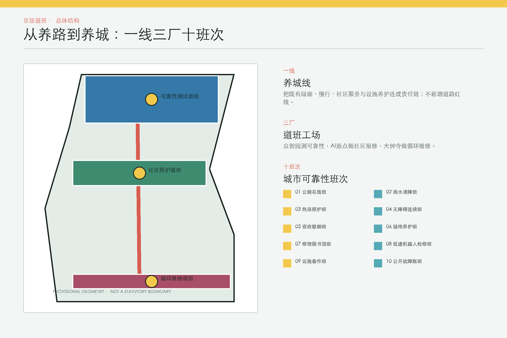
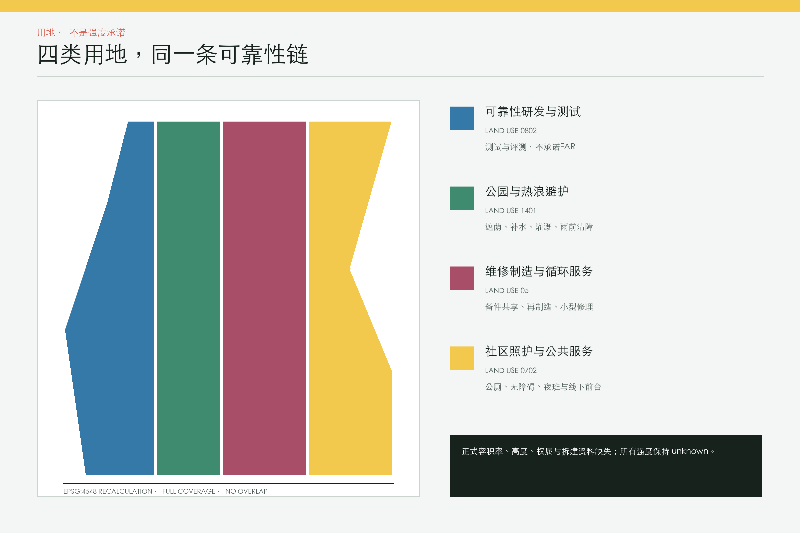
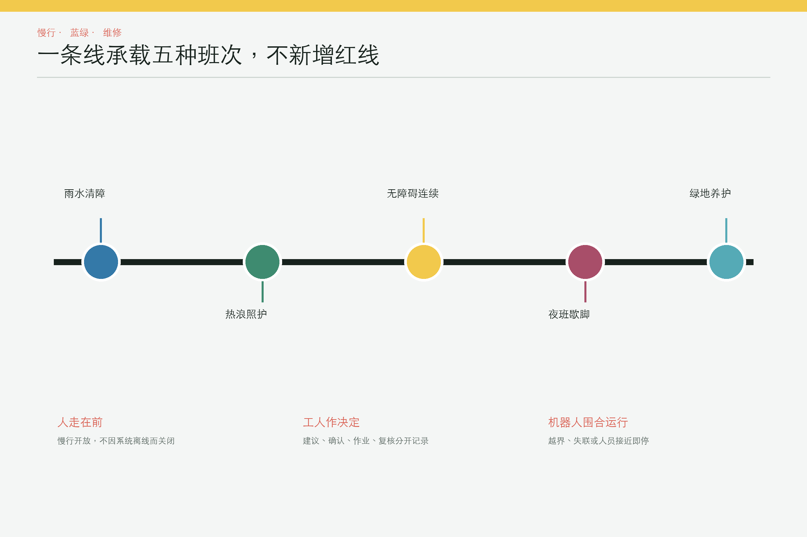

京张道班 · JINGZHANG CAREWORKS：从养路到养城
把百年铁路的养护逻辑转化为京张沿线可度量、可停止、人工优先的城市维修与照护公共基础设施。
京张道班：从养路到养城
铁路的可靠，不只来自列车和车站，也来自每天检查轨道、清障、补水、换件和记录的人。京张道班把这套“看见故障、有人负责、修后复核”的养护逻辑，转化为 AI 创新带的公共基础设施。
本方案不再增加一个抽象的“城市操作系统”。它提出一条人工优先的城市可靠性链：公众与一线工人能报修，AI 只做工单去重、异常预警和排班建议，运营者现场确认、决定、作业并接受申诉。任何自动化都必须有基线、观测窗口、停止阈值和可工作的线下路径 [requirement:agent.1] 标准。

设计依据与资料清单
资格预审公告给出约 43.6 平方公里统筹研究范围、约 11.4 平方公里总体设计范围和三处合计 368.4 公顷重点区；本包只把仓库提供的 provisional 几何用于临时落图和复算，不把它们写成 official polygon 来源 空间数据 指标 [assumption:A-BOUNDARY-001]。三处重点区的临时矩形没有被移动或修形 空间数据 指标。
2026 年 8 月 10 日官方图解所述约 1668.2 公顷街区控规范围，是另一个尺度；它不能替代本次征集的 11.4 平方公里总体范围，也没有被截图描成矢量边界 来源。清华园车站旧址保护要求可作为 no-build 复核条件，但缺少可核验坐标，因此本包没有生成“官方保护范围”多边形 来源 [assumption:A-HERITAGE-001]。
三层范围工作框架
三层范围使用同一套“证据先于造型”的工作法，但承担不同判断。统筹层只讨论跨区域产业、人才、供应链与治理；总体层才组织用地、公共空间、交通、市政和分期；重点层只在临时重点区里表达可逆的试点与组团包络。任何从上层传到下层的面积、边界或控制值都必须携带来源与精度标签，不能因为图面连续就被误读为同一法定范围。若后续获得官方 CAD/GIS，应先锁定约束、重做拓扑和指标，再判断方案是否仍成立 深度 [assumption:A-BOUNDARY-001]。
三层工作方式如下：
1. 43.6 平方公里统筹层： 研究维修人才、供应链、开放测试和公共数据标准的协同，不画新的法定空间控制线。 2. 11.4 平方公里总体层： 以遗址公园连续绿廊为“养城线”，组织报修前台、巡检线、备件点和试点责任网络。 3. 368.4 公顷重点层： 在三个临时重点区内分别提出可靠性测试、社区照护、循环维修三处“道班工场”；建筑包络仅为概念性设计层 空间数据 深度。
公开报道显示遗址公园已形成约 9 公里连续绿廊，开放状态属于 2026 年 8 月的时点信息。方案因此优先做既有公共空间的维修与运营叠加，而非重复新建绿道；实施前仍需现场复核 来源 来源 [assumption:A-SURVEY-001]。
统筹研究范围产业与未来城市研究
43.6 平方公里统筹层把“城市可靠性”设为跨区域 AI 产业命题。AI 原点社区提供公共问题与使用反馈，众智园提供从传感、边缘计算、模型、机器人到审计工具的全栈测试，大钟寺承接备件、再制造和服务企业；中关村科技服务翼连接知识产权、资本与国际服务，小月河场景赋能翼连接连续公共场景。五者形成问题发布、封闭评测、有限试点、第三方复核和证据化采购的循环，而不是单向招商走廊 [requirement:agent.1] [requirement:agent.2]。
人才不只定义为算法工程师，也包括设施运营者、维修工、无障碍审查者、照护者和公共数据审计者。品牌语言从铁路“道班”取意：信号黄表示待处理，轨道绿表示可继续服务，维修红表示停止与人工接管；Logo 方向由两条平行轨线和一个开放维修括号构成。年度“城市可靠性周”、开放失败案例会、开发者维修挑战和公众复盘构成长效活动体系，成果进入可移植评测包而不是一次性展演 [requirement:agent.5] [requirement:agent.6]。
| 任务书框架 | 京张道班的明确转译 |
|---|---|
| 百年京张文化带 | 以日常养护、工程责任和可读维修痕迹延续铁路文化，而非复制怀旧造型。 |
| 都市 AI 生活体验带 | 以公厕、无障碍、热浪、夜班和绿地可用率形成日常体验。 |
| AI 融合创新带 | 以问题清单、全栈评测、90 天试点和证据化采购连接研发与城市服务。 |
| AI 全栈自主创新体系 | 打通传感、边缘、模型、机器人、人工接管和审计工具，接口保持厂商中立。 |
| 世界级 AI 创新生态 | 让高校、企业、运营者、维修者和公众围绕真实故障共同定义与验证。 |
| AI+ 场景赋能新范式 | 十个班次均以最小数据、人工批准和停止规则为前提。 |
| 智能化 AI 活力城市 | 用公共设施连续可用、夜间照护和劳动净省时衡量活力。 |
| AI 治理全球话语权 | 发布服务卡、失败案例、人工改写、申诉与退出记录。 |
| 三区两翼 | 在可靠性循环中的角色 |
|---|---|
| AI 原点社区 | 提出公共问题、共同定义服务基线并验证线下可用性。 |
| 众智园 AI 自主创新加速区 | 建立封闭测试、全栈评测、机器人安全与治理工具。 |
| 大钟寺 AI 产业集聚区 | 承接维修新业态、备件共享、再制造与中小企业孵化。 |
| 中关村科技服务翼 | 提供知识产权、资本、国际标准与第三方专业服务。 |
| 小月河场景赋能翼 | 提供连续公共场景和跨社区的服务迁移验证。 |
空间结构不是“三核再加两翼”，而是一套能被追责的工作图：
- 一线：养城线。 以既有/规划绿廊的概念界面串联人行、骑行、站点与社区服务，不新增道路红线 空间数据。
- 三厂：三处道班工场。 众智园做可靠性测试，AI 原点社区做居民与工人共同报修，大钟寺做备件共享和循环修理。三处建筑包络由临时重点区缩放生成，只表达功能关系 空间数据 [assumption:A-CONTROLS-001]。
- 十班次：十个可停止的公共服务场景。 每个班次都写清使用者、时段、空间、AI 边界、线下兜底、运营者和指标；默认不使用人脸识别或个人轨迹。
总体设计范围城市更新与控规深度城市设计
11.4 平方公里总体层采取“先维护、再更新”的策略。已有公共空间先补齐责任人、巡检路线、备件、无障碍连续性和线下服务，再判断是否需要空间改造；土地与建筑层只给出四类概念功能和三处小尺度组团包络，不把临时几何转化为容积率、高度或拆迁判断。交通层只表达服务联系，市政层把排水、饮水、环卫、照明和设施状态纳入同一工单责任链，新型基础设施优先采用可离线、可导出、可替换的轻量组件 [requirement:1.4.1] [requirement:1.4.2]。
总体设计的公共价值以连续可用而非新增体量衡量：绿廊是否在降雨、热浪、夜间和系统离线时仍能通行，公厕与饮水是否有人维护，工人是否能拒绝错误建议，公众是否知道关闭原因和预计修复时长。更新项目只有在 30 天基线、专业安全审查、运营责任与退出路径都明确后才进入 90 天试点；这使城市设计、运营设计和 AI 评测共用一张证据账 [requirement:1.4.3] 深度。

用地分区完整覆盖提交边界且不相互重叠，分别支持可靠性研发、公园与热浪避护、维修制造、社区照护四类功能 空间数据 指标 [review:self_check#LAND_USE_TOPOLOGY]。建筑强度、高度、拆建量和权属因缺少正式资料保持 unknown，不从概念包络反推 [assumption:A-CONTROLS-001] 深度。
重点区域详细设计
3.1 众智园：可靠性测试道班
把“自主创新”落到城市设施可靠性评测：封闭样段验证低速巡检机器人、排水异常识别、热浪值守建议和人工接管。测试报告同时记录成功、漏检、误报、停机和工人净省时，不以演示次数代替公共价值 [requirement:agent.2] 空间数据。
3.2 AI 原点社区：社区照护道班
把报修入口放到真实日常服务：公厕、无障碍连续性、饮水、遮荫和夜间歇脚。居民可以线下、电话或网页提交；合并后的工单必须由现场人员确认。模型不能代居民陈述，也不能用投诉量给社区或工人排名 [requirement:agent.3] 标准。
3.3 大钟寺：循环维修道班
把产业聚集从“展示 AI”转向修得更快、用得更久：设施备件共享、再制造、小型维修企业孵化和公开可靠性账本。采购始终由人批准，算法不锁定供应商 [requirement:agent.4] 空间数据。

AI 创新生态、人才画像与 AI+ 场景
五类用户画像分别是：老年人与残障者，儿童与照护者，夜间与户外劳动者，学生/开发者/小微企业，以及设施运营与维修人员。每类画像既包含使用者，也包含可能承担维护和复核的人，避免把“市民”写成无差别客群。十张场景卡覆盖不同时间、空间和网络条件，并将 AI 限定在去重、预警、检索和建议；人脸识别、个人轨迹、自动采购、自动处罚和模型替居民发言均不在设计范围 [requirement:agent.3] 标准。
| 班次 | 使用者与地点 | AI只做什么 | 人工兜底 | 首要指标 |
|---|---|---|---|---|
| SC-01 公厕在线班 | 通勤者、儿童照护者、老年人；AI原点社区与遗址公园入口 | 缺纸、积水、无障碍设施故障合并报修；保洁员现场确认 | 纸质巡检表、电话派单、现场封闭牌 | 开放率、无障碍设施可用率、95分位响应时间 |
| SC-02 雨水清障班 | 步行者、骑行者、市政养护人员；低点、桥下与东西向缝合口 | 降雨前生成巡检建议，人员确认堵点并记录清障 | 固定雨前清单与人工观察 | 积水持续时间、误报率、人工接管率 |
| SC-03 热浪照护班 | 老年人、户外劳动者、儿童；连续绿廊、站口与社区服务点 | 依据公开天气发布补水与遮荫点值守建议，不做人脸识别 | 固定开放时段、人工广播与纸质地图 | 遮荫座位可用率、饮水补给中断时长 |
| SC-04 无障碍连续班 | 轮椅使用者、视障者、推婴儿车家庭；坡道、盲道、过街与站点接驳 | 障碍工单去重，现场人员复核后发布绕行 | 人工引导、临时坡板与热线 | 连续可达时长、投诉闭环率、绕行增距 |
| SC-05 夜班歇脚班 | 保洁、安保、配送与维修人员；大钟寺换乘界面与24小时服务节点 | 公布可用座位、饮水、充电和厕所状态；不追踪个人 | 固定值守表和机械钥匙 | 服务中断时长、夜间人工巡检负担 |
| SC-06 绿地养护班 | 公园养护员、周边居民；九公里绿廊的试点样段 | 以土壤与天气数据建议灌溉，人员决定执行 | 人工土壤检查与定额灌溉 | 用水强度、植株存活率、建议驳回率 |
| SC-07 修理图书馆班 | 学生、居民、小微企业；高校—园区接口与社区闲置空间 | 工具预约、维修知识检索与人工安全审核 | 线下台账与现场指导 | 修复件数、复用率、安全事件 |
| SC-08 低速机器人检修班 | 市政工人、机器人研发团队；众智园封闭测试段 | 机器人仅采集设施状态，越界、通信失败或人员接近即停 | 完全人工巡检 | 安全接管次数、漏检率、工人净省时 |
| SC-09 设施备件班 | 运营单位、维修工、小型制造商；大钟寺维修制造与循环服务组团 | 按故障类型建议共享备件库存，不生成自动采购决定 | 人工询库与多供应商询价 | 缺件停工时长、库存周转、再制造占比 |
| SC-10 公开故障账班 | 公众、运营者、审计者、开发者；三处道班工场及线上静态看板 | 只发布聚合故障、关闭原因与修复时长，不发布个人轨迹 | 月度人工公告与可下载CSV | 数据完整率、申诉关闭率、重复故障率 |
这十个场景不是已承诺项目。它们是一组可供专业团队、运营单位和社区筛选的试点候选；任何一个班次都必须先补齐 owner、现场基线、数据许可、劳动影响和安全评估 [assumption:A-OPERATIONS-001] [requirement:agent.5]。
三个 90 天测试验证场景
P-01 AI原点社区：公厕与无障碍连续性
- 建议责任主体： 建议责任：公园/街道设施运营方；专业审查后确定
- 基线： 连续14天人工巡检，记录开放、故障与投诉基线
- 观测窗口： 90天；前30天只做影子建议，不自动派单
- 停止阈值： 连续两周误派单>10%，或出现一次无障碍绕行信息严重错误即暂停
- 人工回退： 恢复固定巡检、电话派单和现场告示
P-02 众智园：雨水—热浪—低速巡检闭环
- 建议责任主体： 建议责任：市政/公园养护单位与封闭测试场运营方
- 基线： 两次降雨过程或30天日常人工记录，以先到者为准
- 观测窗口： 90天，仅在围合样段运行机器人
- 停止阈值： 越界、通信丢失未停车、人员近距未停车、漏检关键故障任一发生即停
- 人工回退： 完全人工巡检并保留纸质雨前清单
P-03 大钟寺：备件共享与循环修理
- 建议责任主体： 建议责任：设施运营方、维修企业与第三方审计代表组成的试点小组
- 基线： 30天记录缺件停工时长、询价次数与报废去向
- 观测窗口： 90天，只做库存建议和人工批准
- 停止阈值： 单一供应商份额无解释超过60%，或出现一次无授权采购即停
- 人工回退： 恢复多供应商人工询价与原有审批
三个试点共同遵循 14/30 天基线 → 30 天影子运行 → 60 天有限运行 → 第 90 天公开复盘。未经基线的“提升百分比”不发布；没有责任主体签字就不启动；停止后人工服务必须继续可用 指标 标准。

把可靠性变成可验证产业
道班工场提供四类开放任务，而不是一次性技术展：
1. 公共问题清单： 运营者发布匿名化故障类型、基线口径和禁止采集项。 2. 封闭测试与影子模式： 开发者先在历史数据或封闭样段评测，输出失败案例和人工接管记录。 3. 小额试点与停止规则： 通过安全、隐私、无障碍和劳动复核后进入 90 天试点。 4. 可移植评测包： 发布字段字典、离线表单、人工流程和模型卡，使成果可在其他街区复核，而非绑定单一供应商。
六个国际参考只借用可观察的机制，不把城市背景或宣传结果直接搬到海淀：
| 全球案例 | 可观察机制 | 转化到京张道班 |
|---|---|---|
| 纽约 311 Open Data | 公开结构化服务请求字段与时间序列 来源 | 建立共享故障分类与聚合可靠性账；不导入个人记录。 |
| Boston 311 | 电话、网页与移动端并行的公共入口 来源 | 数字报修必须与电话、纸质和现场前台并行。 |
| 新加坡 OneService | 跨市政服务的事件路由入口 来源 | 模型只建议责任路由，接单主体必须人工确认。 |
| Helsinki AI Register | 面向公众说明城市 AI 系统 来源 | 每个试点发布目的、数据、负责人、人工干预和退出服务卡。 |
| Amsterdam Algorithm Register | 披露算法用途、风险与联系路径 来源 | 公开建议被人工改写、申诉与审计的接口。 |
| Barcelona Decidim | 开源参与式提案与讨论流程 来源 | 形成可移植的试点提案、异议、公开复盘和版本记录。 |
上述案例不是成效背书，也不是采购名单。转化前先做中国法律、海淀运营、劳动、无障碍和数据本地化复核；无法满足线下兜底和明确责任人的机制不进入试点。
高校团队、初创企业、社区维修者和设施运营者分别承担研究、产品、经验与责任，形成“问题—评测—试点—采购前证据”的转化路径 [requirement:agent.1] [requirement:agent.6]。三处可访学地标不是巨型雕塑，而是公开故障账板、封闭可靠性试验台、修理图书馆；它们展示真实失败与修复，不制造“零故障”神话。
用地、建筑规模与拆改留方案
四类用地由同一临时总体边界拓扑分割而来，覆盖完整且不重叠：0802 承载可靠性研发与测试，1401 承载公园、遮荫和雨前清障，05 承载维修制造、备件和循环服务，0702 承载社区照护与公共服务。它们是城市设计功能分区，不是法定用地调整。三处建筑只表达道班工场的概念包络，建筑面积来自设计几何复算，不表示获批规模 空间数据 指标。
拆改留采取保守顺序：有文保或坐标不明的对象一律“留并待核”；可继续使用的公共空间先“维护与微更新”；只有经结构、消防、权属、运营和全生命周期碳复核的低效空间才讨论“改”；本包不提出“拆”。正式 FAR、限高、建筑密度、退线和产权资料均缺失，因此强度指标保持 unknown，不会用临时建筑包络倒推出开发容量 [assumption:A-CONTROLS-001] 深度。
交通、轨道、市政与公共服务设施
- 交通： 养护巡检与慢行共享线仅表达服务联系；不自行绘制道路或轨道控制线。维修车辆在低峰按运营审批进入，任何机器人只在围合样段运行 空间数据。
- 数字基础设施： 工单可用纸张、电话和本地 CSV 运行；网络中断不应阻断公厕、无障碍、饮水或应急服务。聚合公开账本保留审计日志，但不发布人脸、个人轨迹、身份评分或原始投诉文本 标准。
轨道与道路信息只用于识别换乘和服务接口，不自行推定控制线。市政设施按“资产编号—现状基线—责任单位—人工巡检—建议—处置—复核”记录；没有资产台账的设施不能直接接入模型。公共服务点保留纸质表、电话和现场标识，弱网或断网时照常运行。低速机器人不与开放慢行混行，只能在围合样段、有人监护和明确地理围栏条件下测试 深度 深度。
蓝绿空间、公共空间与城市风貌
绿地层用于组织遮荫、补水、灌溉和雨前清障的概念责任区；公共空间层组织报修前台、无障碍绕行和夜间歇脚。两类比率只针对提交的概念层，不与其他方案直接横比。热浪班次优先检查树荫、座椅、饮水和开放时段，雨水班次优先检查低点、桥下与东西缝合口，二者共享人工巡检但不共享个人身份数据 指标 指标。
城市风貌不新增一个与铁路遗产竞争的巨构，而把维护痕迹转化为可读设计：可替换的信号色构件、公开维修日期、旧件再利用和小尺度工作台。清华园站房、旧轨和坡道牌等信息用于约束叙事；取得正式坐标前，不在其附近提出新建地标，不复制官方图解。三种文化的连接方式是：京张文化贡献长期养护与工程责任，中关村文化贡献开放评测与知识共享，AI 新文化贡献透明、可停止和可审计的服务 来源 来源 [requirement:agent.5]。
用户、劳动与运营责任
五类用户画像贯穿方案：老年人与残障者、儿童与照护者、夜间与户外劳动者、学生/开发者/小微企业、设施运营与维修人员。每个界面先满足最弱联网、最少数字技能和最少个人数据条件。传统服务路径与智能建议并行 标准。
公开账本分三层：公众看到聚合可用率和关闭原因；运营者看到工单与派班；审计者在合法授权下查看模型建议、人工决定和改写记录。工人可以驳回建议并记录理由，驳回率被视为模型校准指标，不是绩效惩罚。
更新项目清单、实施政策与分期计划
项目清单按“先补证据、再做可逆试点、最后决定长期化”排序。优先项不是新建地标，而是三处道班工场的基线与运营准备：AI 原点社区补齐公厕和无障碍连续性台账，众智园建立围合可靠性测试段，大钟寺建立备件与报废去向台账。每项都必须先确认责任主体、权属、文保、消防、市政接口和线下服务，不因列入清单而获得预算、用地或实施承诺 空间数据 [assumption:A-OPERATIONS-001]。
- P0 / 0—30 天： 现场踏勘、无障碍审查、劳动访谈、设施与数据清单；未完成则不进入自动化试点。
- P1 / 31—120 天： 三个 90 天试点；前 30 天影子运行，所有派单由人批准。
- P2 / 4—12 个月： 独立复核安全、服务、公平、劳动与全生命周期成本；只扩展证据充分的班次。
- P3 / 12 个月以后： 由正式规划、预算、采购和公众参与程序决定是否长期化。
CAPEX/OPEX、用地可得性与人员编制均为 unknown；本方案不提供虚假的总投资或回报期 [assumption:A-COST-001]。退出时导出开放格式工单、删除不再必要的个人数据、保留纸质/电话流程并移除可逆设备。
指标体系、面积复算与合规矩阵

空间指标由 EPSG:4548 投影后的提交几何复算，包括面积、比例、建筑包络和巡检线长度 指标 指标。服务指标按班次记录开放率、响应时间、误报、人工接管、投诉关闭、重复故障和劳动净耗时。任何“改善”必须同时给出基线、样本窗口、缺失值和停止事件。
指标分为三组。第一组是可从本包几何确定的提交值，例如临时边界面积、用地覆盖、绿地与公共空间比例、概念建筑包络和道路中心线长度；它们的置信度随临时边界保持 medium，官方几何到位后全部重算 指标 指标。第二组是当前不能计算的法定或工程值，包括 FAR、总建筑面积、建筑高度、道路面积和投资成本，统一保留 value:null 与原因，不用 schema 合法范围替代规划控制 [assumption:A-CONTROLS-001]。第三组是试点运行指标，由责任主体在基线期定义采样频率、分母、缺失值和公开粒度。
compliance_matrix.json 将 17 条官方任务和 6 条 Agent 任务连接到正文、图纸、几何、指标、来源、假设与自检；standard_matrix.json 记录强制标准响应；design_depth_matrix.json 记录专业深度与缺口。矩阵只证明证据链存在，不等于专业判断已经通过。最终门禁以 self_check.json 四个阻断门的结果为准，图面中的任何数字都必须回到 metrics.json 的公式和来源核对 深度 [review:self_check#DETERMINISTIC_VALIDATION]。
风险、版权与合规说明
本包没有现场调查、居民访谈或设备实测，不代表居民、工人或政府作出结论 [assumption:A-SURVEY-001]。官方边界、道路红线、权属、市政、消防、文保坐标、土壤、水文、热环境、客流、设施台账、预算与运营协议均需补齐。正式实施还需规划、建筑、交通、市政、景观、文保、无障碍、消防、数据安全、采购和劳动专业复核 深度。
所有文字、几何、图件、PDF 和离线 HTML 由本次提交生成；政府网页只作事实引用，未复制官微长图、官方效果图、新闻照片、商业地图或地图瓦片。完整说明见 report/copyright_statement.md。
成果索引
- 可读正文：
proposal.md/proposal.en.md - 阅读网页：
report/proposal.html/report/proposal.en.html - 交互总图：
visual/index.html/visual/index.en.html - 图件：
assets/figures/中五组中英双语 PNG - 图纸：
drawings/a3-booklet*.pdf、drawings/a0-boards*.pdf - 几何与复算：
geometry/*.geojson、metrics.json - 证据矩阵：
sources.json、compliance_matrix.json、standard_matrix.json、design_depth_matrix.json
参考资料
1. 北京市规划和自然资源委员会海淀分局，百年京张 AI 创新带城市设计国际方案征集资格预审公告，2026-05-09 来源。 2. 北京规划自然资源，京张铁路遗址公园沿线获批街区控规图解，2026-08-10 来源。 3. 北京市文物局，清华园车站旧址保护范围及建设控制地带，2026-02-14 来源。 4. 首都之窗，京张铁路遗址公园一期相关报道，2021-10-14 来源。 5. 首都之窗与北京海淀，遗址公园二期开放相关报道，2026-07/08 来源 来源。 6. 《中华人民共和国无障碍环境建设法》 来源。 7. 《生成式人工智能服务管理暂行办法》 来源。 8. 《关于切实解决老年人运用智能技术困难实施方案》 来源。